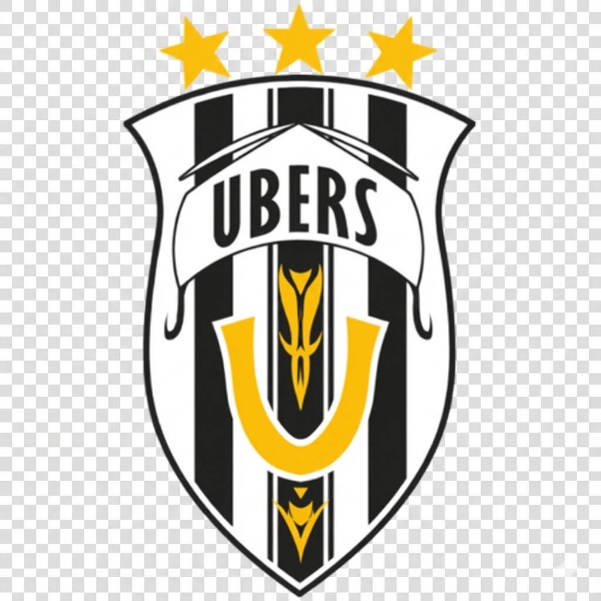

UBERS
Mestre Tático: Marc Snuffy (O Comandante Defensivo)


Marc Snuffy
Treinador e estratega do Ubers, famoso pela filosofia "Trabalhador Perfeito".
- Remate: 86
- Velocidade: 70
- Drible: 65
- Força: 92
- Passe: 84
- Inteligência Tática: 95
A equipa italiana, liderada por **Marc Snuffy**, é o epítome da **defesa tática perfeita**. A sua filosofia é "futebol sem falhas", onde a prioridade máxima é anular o adversário e garantir que a baliza permanece inviolada. Os ataques são a consequência da defesa bem-sucedida.
FILOSOFIA: "Futebol Sem Falhas e Contra-ataque Letal"
O Ubers joga com uma rigidez defensiva implacável. A estratégia central é a **Marcação Homem-a-Homem Perfeita** e o uso de contra-ataques rápidos e incisivos, aproveitando o mínimo erro do adversário para marcar.
JOGADORES CHAVE DE BLUE LOCK
- Barou Shoei (Avançado - O "Rei" do Ubers)
- Aiku Oliver (Defesa Central/CB)
- Aryu Jyubei (Defesa/CB)
- Niko Ikki (Meio-campo Defensivo/DM)